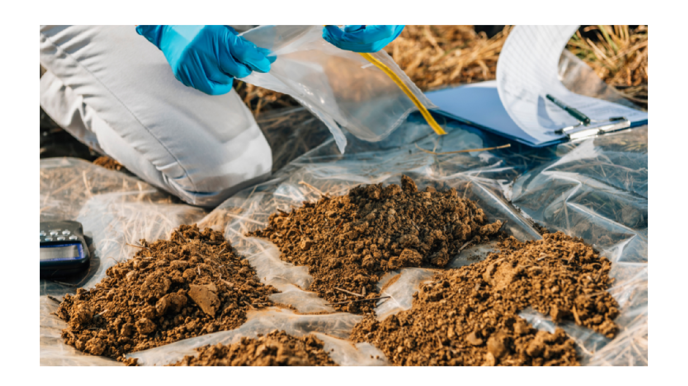
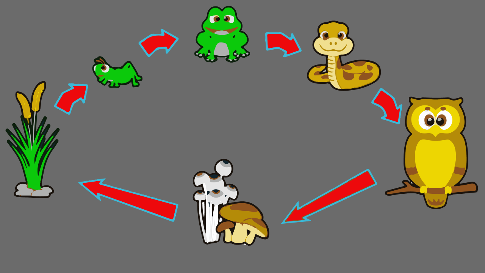
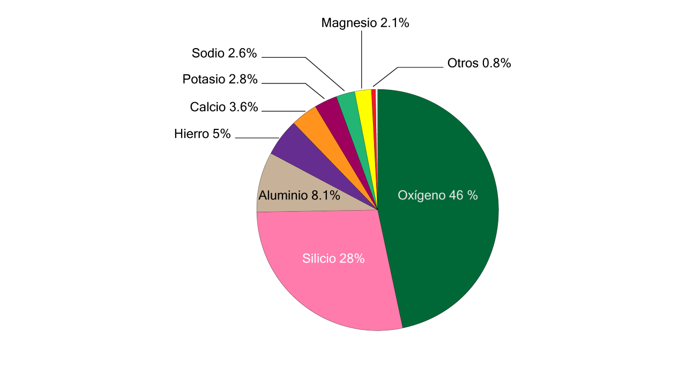
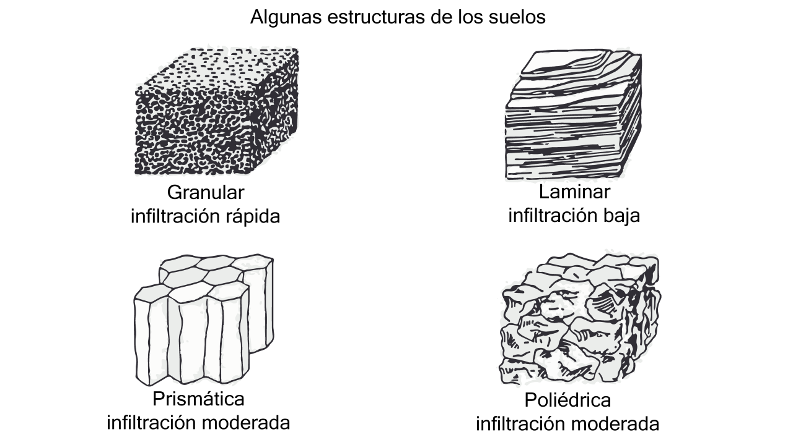
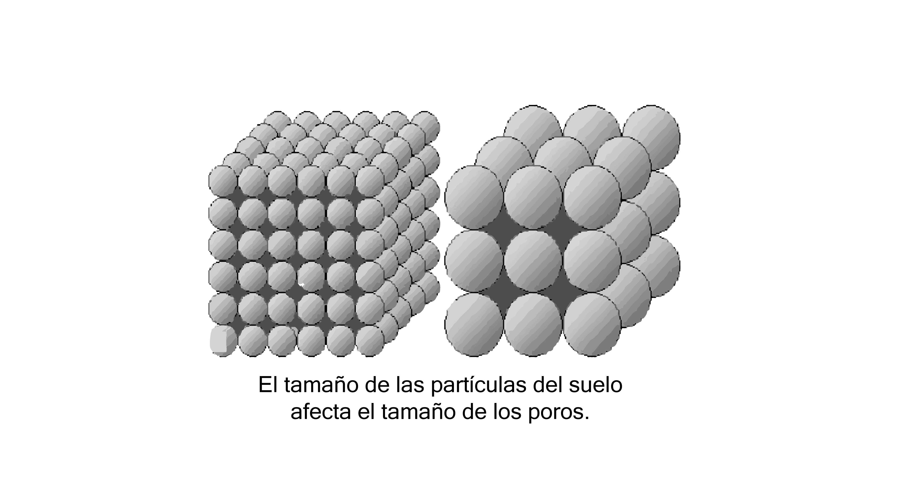
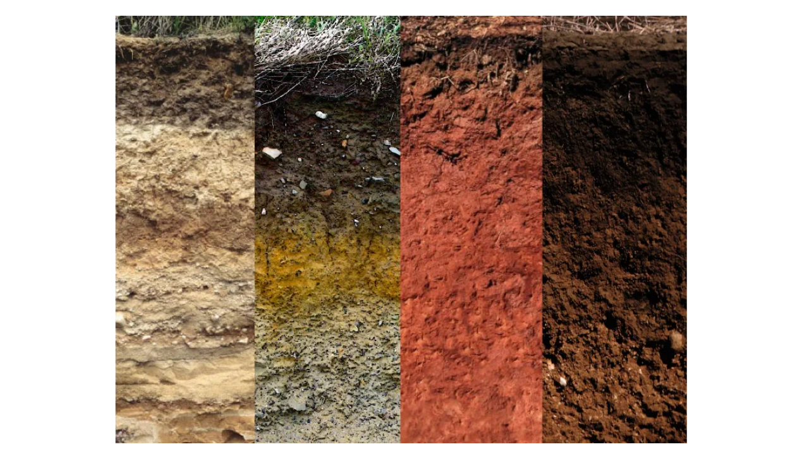

Contenido
- Prefacio
- Introducción
-
1. DIMENSIONES DEL TERRENO - 1.1. Aplicación GPS essentials
- 1.2. Registrando coordenadas
- 1.3. Midiendo la superficie del terreno
-
2. MUESTREO DE SUELOS - 2.1. Distribución de los sitios de muestreo
- 2.2. Extracción de submuestras
- 2.3. Preparación de la muestra compuesta
-
3. EL SUELO: FORMACIÓN Y PERFIL - 3.1. Composición del suelo
- 3.2. Formación del suelo
- 3.3. Características físicas del suelo
- 3.3.1. Textura
- 3.3.2. Estructura
- 3.3.3. Porosidad
- 3.3.4. Densidad
- 3.3.5. Consistencia
- 3.3.6. Color
- 3.3.7. Temperatura
-
4. PROPIEDADES FÍSICO-QUÍMICAS DE LOS SUELOS - 4.1. El complejo coloidal
- 4.2. Las arcillas
- 4.3. La adsorción de cationes
- 4.4. Intercambio de cationes
- 4.5. Saturación de bases
- 4.6. Adsorción de aniones
- 4.7. Movimiento de iones en el suelo
- 4.8. Acidez del suelo
-
5. LOS ORGANISMOS DEL SUELO - 5.1. Los macroorganismos
- 5.2. Los microorganismos
-
6. LA MATERIA ORGÁNICA DEL SUELO - 6.1. Descomposición de la materia orgánica
- 6.2. Constituyentes del humus
Prefacio
El presente material didáctico es una recopilación de diferentes apuntes y materiales bibliográficos
utilizados para la impartición del módulo.
Los temas que abarca este
material sugieren un recurso introductorio sencillo para los jóvenes iniciados
en la formación técnica agropecuaria y forestal. Por otro lado, considero que la
interacción con otros
educadores enriquece nuestro quehacer docente; la comunicación
entre pares permite mejorar nuestros materiales, actualizar nuestros enfoques y modernizar
nuestras estrategias para beneficio de nuestros educandos.
Estaré atento a las sugerencias o correcciones
que puedan observarse sobre este material, seguro estoy de que habrá muchas aportaciones
enriquecedoras por parte de muchos colegas y profesionales en la materia.
Por último, de corazón espero que este modesto esfuerzo les sea de utilidad en cada uno de
sus escuelas y espacios de aprendizaje.
M.C. Héctor René Becerril Cejudo
Aguascalientes a julio de 2023
e-mail: renebec@gmail.com
Introducción
De manera muy simple podemos definir al suelo como la capa más superficial de este
planeta que interactúa con la atmósfera y en la que crecen las plantas (Figura 1).
Desde el punto de vista agronómico, el suelo es el sustrato natural en el que es posible el establecimiento y
desarrollo de los cultivos.

El suelo es un recurso natural muy valioso sin el cual no podría sostenerse la vida en nuestro planeta. Si bien es cierto que actualmente es posible cultivar plantas en sustratos sintéticos, la importancia del suelo vas más allá del sentido técnico agronómico, ya que a escala planetaria juega un rol mucho más importante en otros ciclos e interacciones biogeoquímicas que se llevan a cabo para mantener la vida.
No todos los suelos son iguales, los hay de distintos colores, profundidades, los hay de textura fina o arenosos de grano grueso, etc., (Figura 2). Desde el punto de vista productivo existen algunas características del suelo que son de interés fundamental y que deben tomarse en cuenta para tener éxito en el establecimiento y desarrollo de los cultivos.

En términos agronómicos, el término fertilidad se refiere a la capacidad que tiene un suelo para brindarle a las plantas las condiciones y los nutrientes que necesitan para crecer, lo que puede medirse a través de ciertos parámetros como puede ser la cantidad de materia orgánica presente, la capacidad de intercambio de cationes, la textura, entre otros parámetros que son observables a partir de un análisis de fertilidad de suelos. La fertilidad puede variar a través del tiempo y puede variar a lo largo de un mismo terreno. Además, hay aspectos orográficos y topográficos que pueden incidir sobre la pérdida de la fertilidad, por lo que deben tomarse en cuenta para definir el tipo de prácticas agrícolas que deberán establecerse para mantener la productividad del suelo (Figura 3). Es por eso que antes de cultivar un terreno, es recomendable conocer bien sus características: perímetro y superficie, los sitios más alto y bajo dentro del terreno, la pendiente, y se recomienda además realizar siempre un análisis de fertilidad del suelo cada año, de ser posible.

1. DIMENSIONES DEL TERRENO
Uno de los aspectos básicos antes de pretender establecer un cultivo es conocer la
superficie del terreno donde se desea sembrar. En esta sección aprenderemos a medir
un terreno utilizando herramientas gratuitas y equipos de uso común en la actualidad.
El equipo a utilizar para esta tarea será un teléfono celular que tenga sistema de posicionamiento. Será necesario descargar la aplicación GPS essentials que es gratuita y está disponible en App Store para teléfonos android.
1.1. Aplicación GPS essentias
Antes de utilizar la aplicación será necesario hacer algunas configuraciones. Primero debemos
configurar los permisos de ubicación de la aplicación. Esto se hace en el menú del teléfono en
Ahora abriremos la aplicación y veremos un menú principal donde hay diferentes íconos, haremos click en los tres puntos que se ubican en la parte superior derecha (1) y se desplegará una lista en la que seleccionaremos la opción settings/configuración (2) dentro de la que modificaremos los parámetros de Units (3) y Position format (4) tal como se muestra en la Figura 4.
Primero configuraremos las Unidades (3) y seleccionaremos la opción Meters (SI) como se muestra en la Figura 5.

El siguiente paso es configurar el Formato de posición (4) y seleccionaremos la opción UTM como se muestra en la Figura 6.

En el siguiente paso será regresar al menú principal de la aplicación y hacer click en la opción Dashboard como se muestra en la Figura 7.

Una vez que estamos dentro del Dashboard agregaremos una tarjeta de información o widget, para eso haremos click en el signo "+" que se ubica en la parte superior y en el menú desplegado seleccionaremos la opción Position y por último hacemos click en la opción Close como se indica en la Figura 8.
Ahora nuestro Dashboard contiene una tarjeta que muestra la posición actual en coordenadas dadas en metros y nos muestra también la zona UTM. Este tipo de tarjetas de información las llamaremos widgets y podemos agregar varios en el Dashboard donde cada uno muestre información distinta. En la Figura 9 podemos ver el widget que recién hemos agregado y que muestra datos de Position (posición), podemos ver en el widget el número 13 + que indica la zona UTM "13 Norte" y observamos el valor de la coordenada "x" que es 778,189 (metros); después en la parte inferior podemos ver el valor de la coordenada "y" que es 2,461,222 (metros).

Ahora, por tu cuenta, agrega al Dashboard los siguientes widgets:
a) Accuracy (Precisión)
b) Altitude (Altitud).
No olvides que antes de registrar cualquier posición de interés es importante encender la ubicación de nuestro teléfono. Ahora, con la ubicación de tu teléfono activada observa el Dashboard y registra en tu libreta la información que aparece en los tres widgets que agregaste. En la Figura 10 se muestra la apariencia del Dashboard con los tres widgets activos.
1.2. Registrando coordenadas
Una vez que encendemos la ubicación de nuestro teléfono entonces abrimos
la aplicación GPS essentials y nos vamos al Dashboard, ahí podremos ver las
coordenadas "x" y "y" de nuestra posición en tiempo real. Si queremos registrar
las coordenadas de un sitio de interés, una forma sencilla de hacerlo es
anotando en una libreta las coordenadas que observamos en el Dashboard, sin
olvidar representar en un croquis cada uno de los puntos que registramos.
Existe otra opción para registrar las coordenadas de un punto y consiste en lo siguiente: dentro del menú principal de la aplicación haremos click en la opción waypoints.
Una vez que seleccionamos la opción waypoints veremos una nueva pantalla donde hay un círculo naranja con un signo + y ahora haremos click sobre ese símbolo. Inmediatamente se abrirá una nueva pantalla donde tenemos la opción de seleccionar el símbolo con el que queremos representar en el mapa el punto que estamos registrando, y además, tenemos la opción de asignarle un nombre y una descripción.
Como primer ejemplo seleccionaremos el símbolo del círculo rojo con una línea blanca horizontal, agregaremos como nombre "SITIO DE PRUEBA" y como descripción escribiremos "Probando la aplicación". Por último, hacemos click en la opción de create y así hemos registrado en el teléfono un waypoint con nombre, descripción y cuyas coordenadas quedarán también registradas en la aplicación.
Cuando necesitemos la información de nuestros waypoints simplemente ingresamos desde el menú principal a la opción Waypoints y buscamos por nombre aquel que nos interesa, hacemos click sobre el nombre y podremos ver la descripción y además, si la unicación del teléfono está encendida, podemos saber que tan lejos nos encontramos de ese waypoint.
1.3. Midiendo la superficie del terreno de la escuela
Primero debemos dibujar un croquis del terreno que contenga algunos elementos
de referencia como la entrada, los salones, caminos, etc. Este croquis debemos
dibujarlo con el norte hacia la parte superior de la hoja. En el croquis ubicaremos
los vertices del terreno de la escuela y los etiquetaremos con letras: A, B, C,...,etc., como
se muestra en la Figura 11.
Con ayuda de la aplicación GPS essentials, recorreremos cada uno de los vértices
del terreno. Al llegar a cada uno de los vértices esperaremos dos minutos
antes de registrar en nuestra libreta las coordenadas;
es muy importante esperar al menos dos minutos con la finalidad de darle
oportunidad al GPS de corregir la posición y tener una mejor precisión (Accuracy) para obtener datos más confiables.
Repetiremos el procedimiento en cada uno de los
vértices del terreno. Las coordenadas obtenidas en cada vértice son las siguientes:
A(778104, 2461333)
B(778251, 2461318)
C(778097, 2461194)
D(778244, 2461184)
Con nuestro croquis a la mano y con la lista de coordenadas utilizaremos el método del determinante para hacer el cálculo de la superficie del terreno siguiendo el ejemplo visto en clase con tu profesor.
La matriz de coordenadas se construye escribiendo en cada fila las coordenadas "x" y "y" de cada punto. En esta ocasión se decidió comenzar escribiendo en la primera fila los datos del punto B, por lo tanto, el resto de puntos se irán ingresando, con referencia en el croquis, en el sentido contrario a las manecillas del reloj considerando que el croquis fue trazado con orientación norte. Una vez agregadas a la matriz las coordenadas de cada punto, al final se deben repetir las coordenadas del primero.
Una vez ordenada la matriz, haremos las multiplicaciones correspondientes pero tomando en cuenta solo la parte numérica reducida como se muestra en la Figura 13. Las primeras multiplicaciones a sumarse serán las indicadas con las flechas descendientes y a ese resultado se le restará la suma de las multiplicaciones indicadas con las flechas ascendentes.
Las operaciones en la matriz de coordenadas son las siguientes:
=
=
=
=
40,306 / 2 =
20,153 / 10,000 = 2.01 hectáreas.
En muchas ocasiones será de interés calcular la distancia que hay entre dos sitios. En esos casos utilizaremos las coordenadas de los dos puntos de interés y la fórmula de distancia entre dos puntos vista en clase con tu profesor y que se muestra a continuación:
Ahora te invito a que calcules por tu cuenta la distancia que hay entre los puntos C y D del croquis de la Figura 16 previamente visto. Utiliza las coordenadas que se mostraron en el ejemplo y no olvides trabajar con cifras reducidas para facilitar las operaciones.
2. MUESTREO DE SUELOS
El muestreo de suelos es el procedimiento mediante el cual se obtienen algunas
muestras de suelo que posteriormente serán sometidas al análisis de fertilidad en laboratorio.
El propósito del muestreo es obtener una pequeña porción de suelo que sea
representativa de las características generales de todo el terreno que se quiere cultivar.
El procedimiento de muestreo debe cubrir tres etapas:
1. Distribución de los sitios de muestreo.
2. Extracción de las muestras.
3. Preparación de la muestra compuesta.
2.1. Distribución de los sitios de muestreo
Es importante que los sitios de donde se obtendrán las muestras de suelo estén bien
distribuidos a través del terreno. Con esto se busca "capturar" las
características generales del suelo del terreno completo. Debe evitarse que las muestras
sean forzadas a ser extraidas de zonas
"preferidas" por la persona que realiza el muestreo. Esto quiere decir que las
muestras deben ser distribuidas de manera aleatoria (al azar). Se tomará como referencia
metodológica la Norma Oficial Mexicana 021 de SEMARNAT emitida en el año 2000 (NOM-021-SEMARNAT-2000).
Para distribuir los sitios de muestreo será necesario elaborar un croquis del terreno, dicho croquis deberá dibujarse orientado hacia el norte. Dentro del croquis es importante señalar algunos elementos de referencia como cruces de camino, árboles, construcciones de referencia, cercas, o cualquier elemento que sea fácil de identificar tanto en el croquis como en el terreno. Con ayuda del croquis y mediante un reconocimiento del terreno, trazaremos al menos 3 lineas imaginarias que crucen el terreno en zig-zag, apoyándonos en distintos objetos de referencia tal como se muestra en la Figura 12, donde se utilizaron 4 árboles de referencia y que los identificamos con las letras J, K, L y M.
El siguiente paso es salir a campo y tomar las coordenadas de los vértices del terreno, y además, registrar también las coordenadas de los objetos de referencia, en este caso, las coordenadas de los árboles J, K, L y M. Se deberá medir la distancia que hay en cada uno de los tramos del zig-zag, es decir, la distancia en los segmentos J-K, K-L y L-M. En terrenos pequeños menores a 2 ha será suficiente distribuir 10 sitios de muestreo. Siguiendo con nuestro ejemplo, distribuiremos los diez sitios sobre las 3 líneas de zig-zag:
a) tramo J-K: 3 sitios
b) tramo K-L: 4 sitios
c) tramo L-M: 3 sitios
Para distribuir los sitios de muestreo en un segmento utilizaremos la siguiente fórmula:
dp-q = D / (n + 1)
Donde:
dp-q: distancia entre muestras dentro del segmento que va del punto p al punto q.
D: longitud del segmento que va del punto p al punto q.
n: número de muestras asignadas al segmento que va del punto p al punto q.
Digamos que el segmento J-K, que es el segmento que va del punto J al punto K, mide 100 metros, y en ese segmento debemos distribuir tres sitios de muestreo, utilizando la fórmula tenemos entonces que:
dj-k = 100 / (3 + 1)
dj-k = 100 / 4
dj-k = 25
Los sitios de muestreo a lo largo del segmento J-K se marcarán cada 25 metros. Si el segmento K-L midiera también 100 metros, entonces los 4 sitios de muestreo se marcarían cada 20 m a lo largo del segmento, comprueba este último resultado utilizando la fórmula. A cada sitio de muestreo se le asigna una clave de identificación como se muestra en la Figura 13.
2.2. Extracción de submuestras
En cada sitio de muestreo obtendremos una submuestra. Siguiendo con nuestro
ejemplo, tendremos un total de 10
submuestras que posteriormente servirán para
obtener una muestra compuesta que es la que será enviada a
laboratorio para el análisis de fertilidad.
Para esta actividad se necesitan algunas herramientas como azadón, pala recta, pico, bolsas y etiquetas adhesivas. Primero se limpia la zona de extracción en una superficie de 50 x 50 cm eliminando arvenses con ayuda de un azadón. En caso de que el suelo esté muy duro será necesario aflojarlo con un pico, de no ser así, se puede hacer la excavación directamente con la pala recta. Para extraer las submuestra haremos una excavación de 40 x 40 x 40 cm con una ligera inclinación en las caras laterales, posteriormente con una pala se extrae una rebanada de suelo de la cual se eliminarán 3 centímetros de la parte superior y 3 centímetros hacia los lados como se muestra en la Figura 15.
La porción restante será nuestra submuestra, misma que depositaremos en una bolsa de plástico. Por último, se deberá agregar una etiqueta en la bolsa que llevará los siguientes datos:
1. Nombre de identificación de la parcela o lugar de extracción.
2. Clave de Identificación de submuestra.
3. Fecha de extracción.
4. Observaciones.
2.3. Preparación de la muestra compuesta
Posteriormente todas las submuestras son vaciadas de sus bolsas en un solo
sitio, de preferencia sobre una superficie lisa como una lona o un firme. Con
una pala se mezcla todo el material y después se extiende en una forma circular,
dicho circulo se divide en cuatro partes y se seleccionan solo dos partes
opuestas de la partición y el resto se elimina.

El resto de material se revuelve una vez más y se extiende nuevamente para dividirlo en cuatro partes y seleccionar nuevamente las dos partes opuestas y eliminar el resto. Este procedimiento se repite hasta obtener una muestra compuesta de aproximadamente 1 kg. Este material se deposita en una bolsa de plástico y se etiqueta con la siguiente información:
1. Nombre del interesado.
2. Nombre del lugar de donde procede la muestra.
3. Cultivo que se pretende sembrar.
4. Profundidad a la que se extrajo la muestra.
5. Fecha de extracción.
6. Observaciones.
Este procedimiento se deberá seguir para cada unidad de terreno que se desea cultivar. En caso de que un terreno tenga claras diferencias de vegetación y uso de suelo, se deberá obtener una muestra compuesta por cada subunidad al interior. En caso de que las muestras no sean enviadas inmediatamente al laboratorio, las bolsas deberán guardarse abiertas en un salón fresco donde no les de el sol y que tenga buena circulación de aire.
3. EL SUELO: FORMACIÓN Y PERFIL
3.1. Composición del suelo
El suelo es la parte más superficial de la corteza terrestre, con un espesor que varía, por
lo regular, desde unos pocos centímetros hasta dos o tres metros. Es en el suelo donde los
reinos vegetal y animal establecen una relación íntima con
el reino mineral.

Los vegetales toman del suelo agua y nutrientes y los animales se comen a las plantas para obtener los elementos que necesitan. Los residuos de animales y vegetales vuelven al suelo, en donde se descomponen por la acción de microorganismos para dar de nuevo los productos originales.

Las partículas sólidas del suelo, formadas por minerales y por materia orgánica, dejan entre sí unos espacios vacíos o poros llenos de aire y de agua. Es deseable que los poros ocupen aproximadamente la mitad del volumen total del suelo y que el contenido máximo de agua sea el doble del volumen ocupado por el aire.

El oxígeno es el principal componente de la materia mineral, con un peso que suele sobrepasar la mitad del total. Otros elementos abundantes son: aluminio, hierro, potasio, calcio, magnesio y sodio. Todos los demás elementos que componen la parte mineral no sobrepasan el 1% del peso total.

La materia orgánica del suelo puede ser viva o muerta. La parte muerta está formada por restos de animales y de vegetales más o menos descompuestos por los microorganismos del suelo, que constituyen la parte viva del suelo. Cuando la materia orgánica se descompone por completo se liberan los elementos minerales contenidos en ella, quedando nuevamente a disposición de las plantas.
3.2. La formación del suelo
El suelo se origina a partir de la meteorización de las rocas, proceso mediante el cual
son degradadas y descompuestas por diferentes agentes físicos, químicos y biológicos.
Sobre la roca actúan en primer lugar los agentes físicos, especialmente los cambios de
temperatura, la alternancia de humedad y sequedad y el hielo, que tienden a disgregar sus
componentes, quedando como resultado el material original o parental del suelo, formado
por unos granitos o partículas de roca muy pequeños que no han sufrido aún alteraciones internas
con respecto a la roca basal
El material parental es alterado posteriormente por agentes químicos y biológicos, además de los procesos físicos que continúan disgregando las partículas. La transformación de este material parental es un proceso muy lento que va perfilando progresivamente el material del suelo. Más tarde, los materiales que ya constituyen el suelo sufren otras transformaciones que dan lugar a un suelo más desarrollado y más maduro. Observa el siguiente video.
3.3. Características físicas del suelo
La textura, la estructura, la porosidad, la densidad, la consistencia, el color y la
temperatura son las características físicas que influyen más en el uso del suelo para
los cultivos.
3.3.1. La textura
Las partículas minerales del suelo cuyo tamaño es inferior a 2 milímetros constituyen
la tierra fina. Atendiendo exclusivamente al tamaño de las partículas de la
tierra fina, éstas se clasifican de la forma siguiente:
Arena: partículas cuyo tamaño está comprendido entre 2 y 0.05 milímetros.
Se llaman arenas gruesas las comprendidas entre 2 y 0.2 milímetros y arenas finas las
comprendidas entre 0.2 y 0.05 milímetros.
Limo: partículas cuyo tamaño está comprendido entre 0.05 y 0.002 milímetros.
Arcilla: partículas con tamaño inferior a 0.002 milímetros.
Se denomina textura del suelo a la proporción relativa de arena, limo y arcilla que posee. Según la textura, los suelos se clasifican de la siguiente forma:
Textura fina o arcillosa: en estos suelos predomina la arcilla. Son
adherentes, poco aireados, muy difíciles de labrar y retienen gran cantidad de agua.
textura arenosa: predomina la arena. Son suelos poco cohesivos, de fácil
labranza, con buena aireación para el desarrollo de las raíces y poco poder
retentivo de la humedad.
textura limosa: tienen un contenido alto de limo. Son suelos poco estables
y, por tanto, sensibles a los agentes de degradación.
Textura franca: estos suelos contienen una mezcla de arena, limo y arcilla
en proporción equilibrada, de tal modo que presentan las buenas cualidades de cada
una de las tres fracciones. Los suelos francos contienen menos proporción de arcilla
que de arena y de limo, ya que las propiedades de la primera se expresan con mayor
intensidad que las otras dos porciones.
El contenido de materia orgánica no influye en la denominación de la textura, salvo que existan cantidades superiores al 20 %, en cuyo caso el suelo se llama suelo orgánico.
3.3.1.1. Determinación rápida de la textura
La textura se determina en laboratorio, mediante análisis granulométrico. Cuando se quiere una
apreciación rápida y aproximada se procede de la siguiente forma: se coge un poco de tierra
y se amasa con un poco de agua hasta que adquiere una consistencia semejante a la del mortero
de cemento que se utiliza para unir ladrillos. Se coloca entre las manos un poco de esta tierra,
se intenta formar con ella un cordón delgado y se observa su comportamiento:
La textura es arenosa cuando el cordón se rompe antes de conseguir formar uno de 3
milímetros de ancho.
La textura es arcillosa cuando se consigue formar un cordón de 3 milímetros de diámetro y
10 centímetros de longitud, y con el se puede construir un anillo sin que la tierra se
resquebraje.
La textura es franca si el cordón se rompe cuando se intenta formar uno de un milímetro de
diámetro, pero no se rompe cuando se hace uno de tres milímetros de diámetro. En el
siguiente video vemos un ejemplo de una prueba rápida de textura de suelo para determinar
el contenido de arena.
3.3.2. Estructura del suelo
Recibe el nombre de estructura del suelo la ordenación de sus partículas minerales
individuales (arena, limo y arcilla) para formar otras unidades de mayor tamaño, que
son los agregados. Estos agregados están formados por una agrupación de partículas
de arena, limo y arcilla enlazadas o cementadas por materia orgánica y compuestos
minerales.
Un trozo de suelo se fragmenta con la mano, sin gran esfuerzo, en trozos más pequeños. Estos, a su vez, se dividen en otros más pequeños y así sucesivamente, hasta que se llega a unos trozos muy resistentes que ya no se fragmentan más que con un esfuerzo mayor. Estos últimos elementos son los agregados, que se dan y persisten en el suelo de una forma natural, a diferencia de otros elementos causados por alteraciones artificiales, como son los terrones, producidos por labores efectuadas bajo ciertas condiciones.
Tipos de estructura
Según la forma y ordenación de los agregados se distinguen los siguientes tipos de
estructura:
Laminar: los agregados tienen una forma aplanada con la dimensión horizontal de mayor tamaño que la vertical.
Poliédrica: los agregados tienen forma poliédrica, con las dimensiones horizontal y vertical aproximadamente del mismo tamaño, encajando entre si unos con otros.
Prismática: los agregados tienen todas las caras planas en forma de prisma, con la altura de mayor tamaño que la anchura.
Columnar: esta estructura es semejante a la anterior, pero los prismas tienen las bases redondeadas. Por lo general esta estructura es consecuencia de una edad avanzada del suelo o de la presencia de sodio en la disolución del suelo.
Granular: los agregados son esferas imperfectas, cuyo tamaño puede oscilar de uno a 10 milímetros de grosor. Esta estructura es muy ventajosa para los cultivos, ya que al no ajustar entre sí, las esferas dejan entre ellas unos amplios espacios por donde pueden circular el aire y el agua. La estructura migajosa es un caso particular de la estructura granular que tiene los agregaos muy porosos.
Con relación al tamaño de los agregados, la estructura puede ser: fina, media o gruesa. En cuanto al grado de desarrollo de los agregados la estructura puede ser:
Fuerte: los agregados, que ocupan la mayor parte del suelo, se pueden manejar con facilidad.
Moderada: con agregados relativamente bien formados, muchos de los cuales se pueden separar con la mano.
Débil: los agregados se distinguen únicamente cuando el suelo está húmedo y apenas se pueden separar con la mano.
Sin estructura: los agregados no se distinguen, debido a la falta de aglomeración (estructura de grano suelto), como ocurre con los suelos arenosos, o a la formación de una masa cohesiva, sin líneas de fractura definidas (estructura masiva).

Importancia de la estructura
La estructura del suelo, tanto a nivel superficial como a nivel de subsuelo, tiene una
gran importancia para el desarrollo de los cultivos. A nivel superficial, la estructura
granular, especialmente la estructura migajosa, permite una buena circulación del aire
y del agua a través del suelo. El tamaño y la consistencia de los agregados tienen un
efecto muy marcado sobre la velocidad del agua procedente de la lluvia que no puede
penetrar en el suelo y discurre por la superficie, pudiendo provocar erosión. Uno de los
objetivos básicos de las labores consiste en la preparación de una buena cama de
siembra, con unos agregados pequeños y porosos que suministran humedad y oxígenos a las
raíces de las plántulas.
La penetración de las raíces en profundidad puede estar limitada por la falta de oxígeno que impida la respiración. Un alto contenido de arcilla en el subsuelo y la ausencia de poros grandes impiden que el agua retenida en las capas superficiales pase a capas más profundas, con lo cual el suelo permanece saturado de agua durante muchos días después de las lluvias. Las plantas perennes de raíz profunda mejoran la estructura de los subsuelos arcillosos, pues cuando las raíces se descomponen dejan una red de canales temporales entre los agregados.
3.3.3. La porosidad
Los poros del suelo son los espacios comprendidos entre las partículas sólidad. Por lo
general la mitad del volumen total del suelo está ocupado por los sólidos y la otra
mitad está ocupado por los poros. Los suelos de textura arcillosa tienen un gran número
de poros, que son pequeños y con muchos estrechamientos, mientras que los suelos de
textura arenosa tienen un número relativamente pequeño de poros, que son grandes y
forman canales continuos. Por lo general, los suelos arenosos tienen un volumen de poros
menor que los suelos arcillosos.
Los poros están ocupados por aire y por agua en proporciones que dependen del nivel de humedad del suelo. Los poros pequelos están ocupados por agua y los poros grandes por aire, salvo cuando el suelo está saturado de agua, en cuyo caso está ocupado todo el espacio poroso. Los poros de tamaño intermedio están ocupados alternativamente por aire o por agua, según varía el contenido de humedad del suelo.
El agua drena por gravedad en los poros con diámetro superior a 30 micras. Los suelos que tienen la mayoría de sus poros con diámetro inferior a esa cifra retienen una gran cantidad de agua y, por tanto, drenan y se airean con dificultad.

En lo referente al crecimiento de las plantas, el tamaño de los poros es mucho más importante que su volumen total. Los suelos arcillosos, con poros pequeños y numerosos, retienen una gran cantidad de agua y exigen cuidados para mantener una aireación adecuada. En cambio los suelos arenosos que tienen poros grandes, retienen poca cantidad de agua y no presentan problemas de aireación. Los suelos más adecuados para el desarrollo de los cultivos son aquellos de textura media, con equilibrio entre poros grandes (que permiten una buena aireación) y poros pequeños (que retienen el agua).
3.3.4. Densidad del suelo
Hay que considerar entre densidad aparente y densidad real. La densidad aparente
se refiere a la densidad de una muestra de tierra tal como es, incluyendo el volumen
ocupado por los poros. Para determinarla se divide el peso de un determinado volumen
de tierra secada a estufa por ese volumen de suelo (que es igual al peso del mismo
volumen de agua) y se expresa el resultado en gramos por centímetro cúbico (g/cm3).
La densidad aparente de los suelos varía según su grado de compacidad. En suelos minerales normales los valores más frecuentes de la densidad varían de 1.2 a 1.4 g/cm3, correspondiendo la primera cifra a los suelos arcillosos y, la última, a los suelos arenosos. La materia orgánica hace desender la densidad aparente por dos motivos: es más ligera que la materia mineral e incrementa la porosidad.
La densidad real es la densidad de las partículas sólidas del suelo. Se determina dividiendo el peso del suelo secado a estufa por el volumen que ocupan los sólidos; se excluyen, por tanto, el peso del agua y el volumen de poros. La densidad real de los suelos minerales más comunes varía de 2.5 a 2.7 g/cm3.
3.3.5. La consistencia del suelo
Se llama consistencia del suelo a la cohesión que mantiene unidas a sus partículas,
lo que determina la resistencia que ofrece ese suelo a la penetración de las raíces y
el mayor o menor esfuerzo que se necesita para trabajarlo. Según el contenido de agua en
el suelo, la consistencia se expresa en los términos siguientes:
Dureza: es la resistencia que opone el suelo seco a romperse o fragmentarse cuando se frota con los dedos.
Firmeza: es la resistencia que opone el suelo húmedo a disgregarse por efecto del frotamiento.
Plasticidad: es la capacidad que tiene un suelo saturado de agua para adquirir y mantener una forma determinada cuando se comprime.
Pegajosidad: es la capacidad de un suelo saturado de agua para adherirse a otros objetos.
La consistencia de un suelo, expresado en sus distintos términos, está relacionada con su contenido de arcilla. A medida que aumenta su proporción de arcilla se incrementa su dureza, firmeza, plasticidad o pegajosidad, respectivamente. Hay que tener presente que la plasticidad y la pegajosidad son cualidades de suelos saturados de agua.
3.3.6. Color del suelo
El color del suelo está relacionado con los minerales que lo componen y con su contenido
de agua y de materia orgánica, lo que determina algunas de sus propiedades físicas y
químicas.
En primer lugar hay que advertir que para la apreciación del color, el suelo debe estar seco, ya que en igualdad de otras condiciones el suelo húmedo tiene un color más oscuro que el suelo seco.
Por lo general, las capas profundas del suelo tienen el mismo color que los minerales que lo integran, mientras que el color de las capas superficiales viene determinado, sobre todo, por el contenido de humus y de minerales de hierro, que dan su propio color a las partículas minerales del suelo, a las cuales recubren de un modo semejante a como la pintura recubre a los objetos pintados.
El humus que es la materia orgánica muy descompuesta, tiene color negro, por lo que el color más o menos oscuro del suelo indica un mayor o menor contenido de humus. Este material recubre de tal modo partículas minerales del suelo que basta un contenido de 5% de humus para que el suelo adquiera un color negro cuando está húmedo y gris oscuro o pardo grisáceo cuando está seco.
La mayoría de los suelos de climas cálidos, que suelen tener un bajo contenido de humus debido a la rápida descomposición de la materia orgánica, tienen suficiente cantidad de compuestos de hierro para que estos influyan decisivamente en su coloración. El hierro presente en el suelo se combina con el oxígeno y con el agua del suelo, dando lugar a compuestos de distintos colores que van desde los rojizos con buena aireación hasta suelos en tonos azules y verdes con mucha retención de agua, estos tonos y colores dependerán en parte de la aireación y capacidad de drenaje de los suelos.
La caliza actúa sobre el color del suelo de forma opuesta a como lo hace la materia orgánica, es decir, que aclara los colores. Cuando hay suficiente cantidad de caliza, el color del suelo es grisáceo claro o blanquecino.

3.3.7. La temperatura del suelo
La temperatura del suelo depende fundamentalmente de la intensidad de la radiación solar
recibida que, a su vez, está condicionada por varios factores:
El ángulo de incidencia de los rayos solares
La nubosidad
El color del suelo
El contenido de agua
La cubierta vegetal
La temperatura del suelo influye sobre la germinación de las semillas, el desarrollo y funcionamiento de las raíces y la actividad de la microflora.
Por debajo de la capa superficial, las variaciones de la temperatura del suelo ocurren con más retraso cuanto mayor es la profundidad. A unos quince centímetros de profundidad las temperaturas máxima y mínima diarias se dan con un retraso de cuatro horas, mientras que las variaciones estacionales, experimentan un retraso de varias semanas con respecto a las del aire.
A la llegada del invierno algunos cultivos pueden sufrir deficiencias nutritivas (a menos que se intervenga oportunamente en el abonado), debido a que la reiniciación vegetativa de algunos cultivos está regida por la temperatura del aire, mientras que la reiniciación de la actividad de los microorganismos está regida por la temperatura del suelo. Las bacterias nitrificantes, responsables del paso del nitrógeno amoniacal a nitrógeno nítrico, manifiestan su actividad óptima cuando la temperatura del suelo está comprendida entre 18 y 30 °C.
4. PROPIEDADES FÍSICO-QUÍMICAS DE LOS SUELOS
Un mineral es un compuesto sólido formado por diversos elementos químicos. Nueve de los cuales representan el 99% de los átomos e iones presentes en la corteza terrestre: oxígeno (60%), silicio (20%), aluminio (6%), hidrógeno (3%), sodio (3%), calcio (2%), hierro (2%), magnesio (2%) y potasio (1%).
Los minerales que forman las rocas se llaman minerales primarios. Cuando estos minerales primarios se alteran por la acción de diferentes agentes físicos, químicos y biológicos se transforman en minerales secundarios, entre los cuales se encuentran las arcillas y diversos óxidos e hidróxidos que, debido a sus propiedades físico-químicas, constituyen una de las fracciones más importantes del suelo.
Al meteorizarse los minerales del suelo, proporcionana una parte importante de los nutrientes vegetales. En ocasiones las exigencias nutritivas de las plantas se cubren con los nutrientes procedentes de la meteorización de los minerales, mientras que en otros casos estas aportaciones no son suficientes y hay que recurrir a otras aportaciones suplementarias.
Los átomos de los minerales están dispuestos en una ordenación característica que conforman la estructura de ese mineral. Las unidades estructurales básicas de mayor interés son: el tetraedro, el octaedro y el cubo.
4.1. El complejo coloidal
Las partículas del suelo cuyo tamaño es inferior a dos micras constituyen el complejo coloidal, responsable de la mayor parte de la actividad físico-química que se desarrolla en el suelo. El complejo coloidal está constituido, sobre todo, por la arcilla y el humus, por cuyo motivo también se llama complejo arcilloso-húmico.
Las partículas del suelo cuyo tamaño es inferior a dos micras constituyen el complejo coloidal, responsable de la mayor parte de la actividad físico-química que se desarrolla en el suelo. El complejo coloidal está constituido, sobre todo, por la arcilla y el humus, por cuyo motivo también se llama complejo arcilloso-húmico.
Algunos minerales del suelo pueden ser clasificados como arcilla desde el punto de vista de su tamaño, pero no son minerales arcillosos. En cambio, algunas partículas de arcilla mineral pueden alcanzar mayor tamaño que el correspondiente a la fracción arcilla. La arcilla que se considera a efectos de propiedades físico-químicas del suelo incluye solamente a los minerales de arcilla.
El humus es una materia orgánica muy estable, formada por moléculas orgánicas complejas de tamaño coloidal, cuyos componentes más característicos son los ácidos húmico y fúlvico. El humus se comporta como ácido débil, por lo que sus partículas tienen carga negativa. Por su gran superficie y la carga negativa distribuida a lo largo de la misma, el humus tiene una gran actividad físico-química.
En los climas cálidos y húmedos, con una meteorización muy rápida y un lavado muy intenso, desaparecen de las arcillas una buena parte del sílice y del aluminio, quedando unos materiales muy ricos con diversos óxidos e hidróxidos dotados de una cierta actividad físico-química y que no se expanden.
4.2. Las arcillas
Las arcillas son silicatos alumínicos, cuya estructura se forma a base de oxígeno, silicio y aluminio. El silicio y el aluminio pueden ser sustituidos por otros cationes de menor valencia, lo que origina un déficit de carga positiva y la partícula de arcilla adquiere carga negativa.
Las arcillas pueden ser cristalinas o amorfas, según que los átomos de su estructura estén o no ordenados en forma repetitiva.
4.2.1. Arcillas cristalinas
Las arcillas cristalinas tienen una estructura laminar u hojosa (por cuyo motivo se llaman
filosilicatos). Según la disposición de las láminas existirán arcillas
más expandibles que otras debido a la facilidad o dificultad de penetración del agua entre
las capas laminares.
4.2.2. Arcillas amorfas
Son aquellas que no tienen los cristales orientados de forma repetitiva. Sus propiedades son
extrañas, ya que presentan la superficie activa con cargas negativas y positivas.
4.3. La adsorción de cationes
Un ión es un átomo o un grupo de átomos que ha perdido o ganado electrones, con lo cual el ión adquiere carga eléctrica. Los iones con carga positiva se llaman cationes y los iones con carga negativa se llaman aniones.
Algunos compuestos químicos cuando están disueltos en agua se disocian en iones; por ejemplo, el nitrato sódico (NO3Na) se disocia en aniones nitrato (NO3-) y cationes sodio (Na+). Los elementos nustritivos se disuelven en el agua del suelo, disociándose en iones, en cuya forma son absorbidos por las plantas, aunque en algunos casos también puede haber absorción en forma molecular. El agua del suelo, junto con los elementos nutritivos disueltos, recibe el nombre de disolución del suelo o solución del suelo.
| Elementos | Iones |
|---|---|
| Carbono (C) | CO32- (carbonato), CO2H- (bicarbonato). |
| Oxígeno (O) | Oxígeno unido a otros elementos. |
| Hidrógeno (H) | H+ (hidrógeno), OH- (hidróxido). |
| Nitrógeno (N) | NH4+ (amonio), NO3- (nitrato), NO2- (nitrito). |
| Fósforo (P) | PO4H2-, PO4H2- (fosfato). |
| Potasio (K) | K+ (potasio). |
| Calcio (Ca) | Ca2+ (calcio). |
| Azufre (S) | SO42- (sulfato), SO32- (sulfito). |
| Magnesio (Mg) | Mg2+ (magnesio). |
| Hierro (Fe) | Fe2+ (ferroso), Fe3+ (férrico). |
| Boro (Bo) | B4O72-, BO3H2-, BO3H2- (borato). |
| Manganeso (Mn) | Mn2+ (manganoso), Mn4+ (mangánico). |
| Cobre (Cu) | Cu2+ (cobre). |
| Zinc (Zn) | Zn2+ (zinc). |
| Molibdeno (Mo) | MoO42- (molibdato). |
| Cloro (Cl) | Cl- (cloruro). |
Las partículas coloidales del suelo tienen carga negativa, por lo que atraen y retienen a los iones de carga positiva (cationes) contenidos en la solución del suelo. La adsorción se refiere a la retención de los cationes sobre la superficie de esas partículas coloidales, mientras que la absorción significa la penetración de los cationes en su interior. Los cationes adsorbidos están en un intercambio continuo y rápido con los cationes contenidos en la solución del suelo, mientras que los cationes absorbidos quedan inmovilizados formando parte de la estructura de la arcilla, siendo liberados cuando se produce la descomposición de la misma.
En la mayor parte de los suelos el ión de calcio representa la mayor parte de los cationes adsorbidos, siguiendo a continuación los iones de magnesio, potasio, sodio y amonio.
4.4. Intercambio de cationes
Una partícula coloidal, mineral u orgánica, está rodeada por una película de miles de cationes adsorbidos. Estos cationes adsorbidos no son removidos por el agua de lavado, pero pueden ser reemplazados por otros cationes contenidos en la solución del suelo. Por ejemplo, si una partícula coloidal que tiene adsorbidos, entre otros, iones de hidrógeno (H+) y también iones de calcio (Ca2+) se pone en contacto con una solución que contiene iones de potasio (K+), estos últimos sustituyen a los anteriores, quedando adsorbidos los iones de potasio y liberados los iones de calcio y de hidrógeno, que pasan a la solución del suelo. El intercambio se produce de tal forma que un catión monovalente se intercambia con otro monovalente, uno divalente reemplaza a dos monovalentes, y así sucesivamente.
Todos los cationes adsorbidos pueden ser intercambiados por otros contenidos en la solución del suelo, aunque la mayor o menor facilidad de intercambio viene condicionada por diversos factores característicos de la partícula coloidal, la valencia de los cationes, la concentración de los mismos en la solución del suelo, etc.
El cambio de cationes entre el complejo y la solución del suelo puede hacerse entre cationes de la misma o de distinta clase. Por ejemplo, cuando se incorpora al suelo un abono potásico, al disolverse este abono en el agua se incrementa el número de cationes de potasio en la solución del suelo. Muchos cationes de potasio reemplazan a cationes de calcio adsorbidos, los cuales pasan a la solución. Cuando la planta absorbe cationes de potasio de la solución, otros cationes de potasio pasan del complejo a la solución, con el fin de mantener un equilibrio entre el número de cationes contenidos en el complejo y en la solución.
Es importante resaltar que para que el intercambio de cationes se realice plenamente es necesario que el número de cationes contenidos en la solución y en el complejo alcance un cierto nivel. Por eso, en tierras muy empobrecidas es necesario hacer inicialmente aportaciones importantes de fertilizantes cuyos iones puedan ser adsorbidos por el complejo, con el fin de que las aportaciones posteriores, más modestas, sean más efectivas.
La
🔍👉 Mira el siguiente VIDEO sobre la Capacidad de Intercambio de Cationes.
Las tablas que siguen a continuación indican respectivamente el peso del equivalente de algunos iones y la CIC de algunos coloides y suelos.
| Cationes | Peso de un miliequivalente (mg) | Aniones | Peso de un miliequivalente (mg) |
|---|---|---|---|
| Ca2+ | 20.04 | SO42- | 48.02 |
| Mg2+ | 12.15 | CO32- | 30 |
| K+ | 39.10 | CO3H- | 61.01 |
| Na+ | 22.99 | Cl | 35.45 |
| H+ | 1 | NO3- | 62 |
| NH4+ | 17.03 | PO4H2- | 95.98 |
| _ | _ | PO4H2- | 96.98 |
| Cationes | Peso de un miliequivalente (mg) |
|---|---|
| Arenoso | 1 a 5 |
| Franco-arenoso | 5 a 10 |
| Franco | 5 a 15 |
| Franco-limoso | 5 a 15 |
| Franco-arcilloso | 15 a 30 |
| Arcilloso | 50 (promedio) |
| Humus | 100 a 300 |
Ejemplo
Calcular la CIC de un suelo que contiene el 2% de humus y el 26% de arcilla.
Solución:
Por cada 100 gramos de suelo seco:
| _ | Gramos | Meq/100g | Meq totales |
|---|---|---|---|
| Humus | 2 | 2 | 2 x 2 = 4 |
| Arcilla | 26 | 0.5 | 26 x 0.5 = 13 |
| TOTAL | 17 |
Decimos entonces que la CIC es de 17 meq por 100 gramos de suelo.
Un suelo de pradera contiene 11 meq de calcio intercambiable por cada 100 gramos de suelo seco. Calcular los kilogramos de calcio intercambiable por ha en una capa de 15 centímetros de espesor, sabiendo que la densidad aparente del suelo seco es 1.4
Solución:
Por cada 100 gramos de suelo seco hay:
11 x 20.04 x 0.001 = 0.22 g de calcio.
En cada m2 de suelo hay:
100 x 100 x 1.5 x 1.4 = 210,000 g.
¿En 210,000 g de suelo cuántos gramos de Calcio habrá?
(0.22 x 210,000) / 100 = 462 g de calcio intercambiable.
Por lo tanto en una hectárea habrá:
462 x 10,000 = 4,620,000 g = 4,620 kg de calcio intercambiable.
4.5. Saturación de bases
Algunos de los cationes intercambiables tienen carácter básico, como son los cationes de calcio, magnesio, potasio, sodio, etc; mientras que los cationes de hidrógeno y de aluminio tienen carácter ácido. Se llama porcentaje de saturación de bases a la proporción de cationes básicos con relación al total de cationes intercambiables, expresada en porcentaje. Por ejemplo, un suelo que tiene una CIC de 17 meq/100g, de los cuales 13 meq corresponden a cationes básicos, el porcentaje de saturación de bases será:
13/17 x 100 = 76.4%
Se dice que el complejo está saturado cuando todos los iones ácidos han sido sustituidos por iones básicos.
Los cationes de hidrógeno son los más fuertemente adsorbidos por el complejo, por lo que es más difícil el intercambio por otros cationes. Los suelos que tienen un porcentaje de saturación de bases alto son suelos fértiles, ya que disponen de una gran cantidad de sitios de intercambio ocupados por cationes básicos, fácilmente intercambiables con otros cationes básicos de la solución del suelo.
EJERCICIO
Lea el siguiente problema y conteste las preguntas al final de la sección.
Don Pánfilo Casimiro tiene disponibles dos terrenos para sembrar.
Las superficies son de a)24,000 m2 y b)11,250 m2. La densidad
aparente del suelo de ambos terrenos es de 1.3 g/cm3
y en los resultados del análisis de suelo que mandó hacer Don Pánfilo
se indica que la presencia de algunos cationes como se muestra a continuación:
Terreno a:
K: 5 meq/100 g
Ca: 9 meq/100 g
Mg: 2 meq7100 g
H: 2 meq/100 g
Al: 2 meq/100 g
Terreno b:
K: 4 meq/100 g
Ca: 7 meq/100 g
Mg: 1 meq7100 g
H: 2 meq/100 g
Al: 2 meq/100 g
1. ¿Cuántos kg por ha de nutrientes K, Ca y Mg existe en cada terreno si consideramos
una profundidad de 20 cm?
2. ¿Cuántos kg totales de K, Ca y Mg hay en cada terreno de siembra de Don Pánfilo?
3. ¿Cuál es el porcentaje de saturación de bases en cada terreno?
4. ¿Cuál terreno podría considerarse que es más fértil?
4.6. Adsorción de aniones
Don Pánfilo Casimiro tiene disponibles dos terrenos para sembrar. Las superficies son de a)24,000 m2 y b)11,250 m2. La densidad aparente del suelo de ambos terrenos es de 1.3 g/cm3 y en los resultados del análisis de suelo que mandó hacer Don Pánfilo se indica que la presencia de algunos cationes como se muestra a continuación:
Terreno a:
K: 5 meq/100 g
Ca: 9 meq/100 g
Mg: 2 meq7100 g
H: 2 meq/100 g
Al: 2 meq/100 g
Terreno b:
K: 4 meq/100 g
Ca: 7 meq/100 g
Mg: 1 meq7100 g
H: 2 meq/100 g
Al: 2 meq/100 g
2. ¿Cuántos kg totales de K, Ca y Mg hay en cada terreno de siembra de Don Pánfilo?
3. ¿Cuál es el porcentaje de saturación de bases en cada terreno?
4. ¿Cuál terreno podría considerarse que es más fértil?
La adsorción de cationes se debe fundamentalmente a fenómenos de atracción eléctrica. El complejo coloidal tiene carga neta negativa, por lo que se produce una atracción de los cationes y una repulsión de los aniones. Sin embargo, algunas partículas coloidales (caolinita, arcillas amorfas, hidróxidos de hierro y de aluminio) tienen unas características peculiares que les permiten la adsorción de aniones. Este tipo de absorción se debe sobre todo a posiciones del complejo con carga positiva o a un intercambio de grupos ácidos.
La adsorción de los aniones nitrato y cloruro es prácticamente nula. En suelos ácidos se produce alguna adsorción del anión sulfato, mediante intercambio con aniones hidróxido (OH-) contenidos en los hidróxidos de hierro y de aluminio. Los aniones fosfato son prácticamente adsorbidos por todos los suelos mediante intercambio de aniones OH- ligados a hidróxidos de hierro y de aluminio o atraidos hacia zonas positivas del complejo que se produce bajo condiciones ácidas. La mayor adsorción del fósforo, por tanto, se produce en suelos ácidos que sean ricos en hidróxidos de hierro y aluminio.
El fenómeno de adsorción de aniones es muy complejo, produciéndose interferencias no solo entre ellos, sino también con diversos cationes, tales como el de calcio y el de aluminio.
4.7. Movimiento de iones en el suelo
El movimiento de iones en el suelo se realiza de dos formas:
Por circulación del agua. Los iones que no son absorbidos por las plantas (nitrato, cloruro y la mayor parte del sulfato) se mueven juntos con el agua del suelo. Bajan hacia capas inferiores del suelo cuando hay exceso de agua y ascienden a capas superiores por efecto de capilaridad cuando hay escazes de agua. los suelos arenosos, que retienen poca cantidad de agua, pueden experimentar grandes pérdidas de estos iones, arrastrados por el agua de lavado.
Por difusión. Cuando en la solución del suelo existen zonas con distinta concentración de iones se produce un desplazamiento de los mismos desde la zona más concentrada hacia la más diluida. Este tipo de movimiento de iones es el que predomina entre los iones absorbidos por el suelo.
De las propiedades adsorbentes del complejo coloidal y del movimiento de iones en el suelo se derivan unas consecuencias importantes en la utilización de los abonos que proporcionan elementos primarios:
- Los abonos nitrogenados suministran el nitrógeno bajo las formas de anión nitrato (NO3-) y catión amonio (NH4+). El complejo retiene al amonio, pero no retiene el nitrato. Como consecuencia de esto, el nitrato puede ser arrastrado por el exceso de agua antes de que sea absorbido por las plantas.
- Los abonos fosfóricos suministran el fósforo bajo la forma de aniones fosfato, que son retenidos por el complejo y, por tanto, no son arrastrados por el agua.
- Los abonos potásicos suministran el potasio bajo la forma de catión potasio (K+), que también es retenido por el complejo.
Por otra parte, la cantidad de cationes adsorbidos depende de la capacidad de intercambio del complejo coloidal. Los suelos arenosos y los arcillosos en donde predominan las arcillas con poca superficie activa (caolinita) tienen poca CIC, por lo que los elementos nutritivos son arrastrados con facilidad con el agua de drenaje. Los suelos fértiles tienen una gran CIC en el complejo coloidal, en donde quedan adsorbidos los iones que sirven de alimento a las plantas. Se podría considerar al complejo como una despensa donde se almacenan la mayoría de los elementos nutritivos, que pasan a disposición de las plantas cuando ésta los necesita.
4.8. Acidez del suelo
Hay que distinguir entre acidez actual y acidez cambiable. La acidez actual está
determinada por la concentración de iones de hidrógeno (H+) contenidos en
la solución del suelo. Esta concentración es pequeña, por lo que se expresa con la notación
pH (potencial de hidrógeno), que es el exponente, cambiado de signo, a que habría
que elevar 10 para obtener la concentración molar de iones hidrógeno en una
disolución determinada. Por ejemplo:
| Concentración de H+ (en moles por litro de solución) | pH |
|---|---|
| 10-3 = 0.001 | 3 |
| 10-4 = 0.0001 | 4 |
| 10-5 = 0.00005 | 5 |
Según se observa en el ejemplo anterior, cuando el pH aumenta en una unidad, la concentración de iones de hidrógeno se divide por 10, Así, una disolución de pH = 5 tiene una concentración 10 veces menor que otra de pH = 4 y 100 veces menor que otra con pH = 3.
Cuando el pH = 7 la disolución es neutra. Si el pH es inferior a 7, la disolución es ácida, y será tanto más ácida cuanto menor sea el valor del pH. Si el pH es superior a 7, la disolución es básica, y será tanto más básica cuanto mayor sea su pH.
El valor pH varía teóricamente entre 0 y 14, aunque en la myoría de los suelos está comprendido entre 5.5 y 8.5.
La acidez cambiable está determinada por la cantidad total de iones de hidrógeno (H+) y de aluminio (Al3+) adsorbidos en el complejo coloidal. Esta acidez es la diferencia entre el total de cationes adsorbidos y los cationes básicos; depende, por tanto, de la CIC y del porcentaje de saturación de bases.
La acidez cambiable se neutraliza cuando los iones ácidos son intercambiados con iones básicos contenidos en la solución del suelo. Los H+ y Al3+ son retenidos fuertemente por el complejo, por lo que se necesitan iones básicos en exceso para lograr la neutralización completa de la acidez.
El poder amortiguador de un suelo hace referencia a la dificultad que tiene ese suelo para modificar su acidez cambiable. Los suelos arcillosos y ricos en humus, con gran CIC, tienen un fuerte poder amortiguador, puesto que necesitan una gran cantidad de Ca2+ para sustituir a todos los H+, en el supuesto de que ese suelo fuera ácido. En cambio, los suelos arenosos, que tienen poca CIC, tienen un débil poder amortiguador, y cuando son ácidos necesitan aportaciones moderdas de calcio para neutralizar su acidez.
5. LOS ORGANISMOS DEL SUELO
El suelo es un medio muy favorable para la vida y en el se desarrolla una gran variedad de
seres que clasificaremos en macroorganismos y microorganismos.
5.1. Los macroorganismos
Los mamíferos pequeños que viven en el suelo, los insectos, lombrices, etc., tienen una
gran influencia en las transformaciones químicas, ya sea a través de sus procesos digestivos
o por su acción directa sobre los microorganismos. Tienen la capacidad de pulverizar
el suelo y además, las galerías que forman promueven la aireación y el drenaje en el suelo.
Se alimentan de tejidos vegetales más o menos descompuestos y con lo que se inician procesos
de descomposición que posteriormente terminan los microorganismos.
Las raíces son consideradas macroorganismos vegetales, y estas excretan sustancias ácidas que actúan como disolventes transformando algunos materiales insolubles en solubles y asimilables. En la
5.2. Los microorganismos
La población microbiana del suelo es muy abundante y varía según las condiciones del medio y
la cantidad de alimento disponible. En un medio idóneo se estima que al cabo de un año se
pueden formar de tres a seis toneladas de cuerpos microbianos en una hectárea de suelo.
Los diferentes microorganismos que habitan el suelo como bacterias, hongos, actinomicetos, entre otros, son de vital importancia para mantener un suelo sano y fértil, ya que se encargan de distintos procesos desde la fijación de nutrientes o la descomposición de materia orgánica, lo que es fundamental para hacer disponibles los nutrientes requeridos por las plantas.
5.2.1. Micorrizas
Las micorrizas son asociaciones simbióticas que se desarrollan entre ciertos hongos
microscopicos del suelo y las raíces de la mayoría de las plantas. La planta transfiere al
hongo carbohidratos, proteínas y vitaminas, mientra que el hongo desarrolla un sistema
muy eficaz para captar ciertos nutrientes minerales (especialmente fosfatos) y
traspasarlos a la planta. Las plantas que responden mejor a la micorrización son las que
tienen grandes necesidades de fósforo (leguminosas) y aquellas otras que tienen un sistema
radical pobre (cebolla, papa). Cabe señalar la influencia negativa que tienen los
plaguicidas sobre las micorrizas.
6. LA MATERIA ORGÁNICA DEL SUELO
La materia orgánica del suelo está constituida por aquellas sustancias de origen animal o
vegetal que se acumulan en el suelo o se incorporan a el. Las sustancias de origen animal
están formadas por restos de animales y sus deyecciones, las cuales se transforman rápidamente
en el suelo sin dejar productos duraderos. Las sustancias de origen vegetal proceden de los
residuos de plantas superiores (raíces y partes aéreas) y de los cuerpos sin vida de la
microflora del suelo (bacterias, hongos, actinomicetos y algas).
6.1. Descomposición de la materia orgánica
Sobre la materia orgánica del suelo actúan una infinidad de microorganismos que la
descomponen y transforman. Esta transformación se realiza mediante dos procesos distintos:
- Mineralización. Los residuos orgánicos se descomponen completamente y se transforman con rapidez en sustancias minerales (agua, dióxido de carbono, nitratos, etc.).
- Humificación. Los residuos orgánicos se transforman en primer lugar en otra materia orgánica muy descompuesta y de naturaleza coloidal, llamada humus. Con posterioridad el humus se transforma lentamente en sustancias minerales.
La mayor parte de los residuos animales se mineralizan sin pasar por el estado de humus. Por este motivo, y porque son muy escasos en comparación con los residuos vegetales, tienen escasa importancia.
La materia orgánica se descompone con mayor o menor rapidez, según la composición del material original. El almidón, la celulosa y las proteínas sencillas se descomponen rápidamente, mientras que las ligninas, ceras, taninos, resinas y grasas son bastante resistentes al ataque microbiano y se descomponen con lentitud, constituyendo la base del humus.